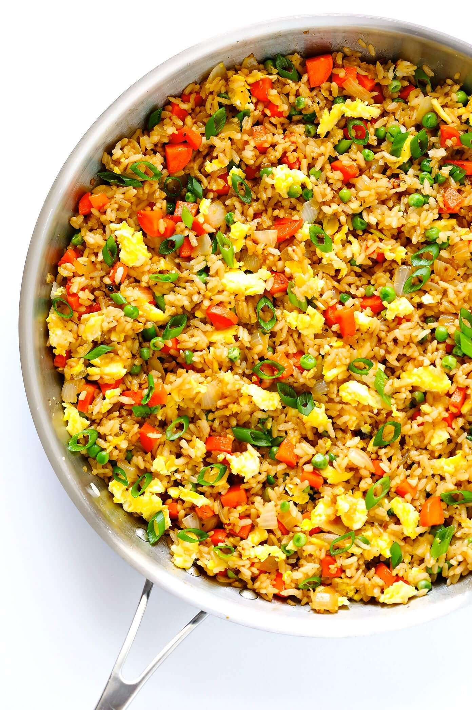

Fried Rice

Description
Chinese inspired fried rice that is quick and easy to make.
Ingredients
- 3 tbsp butter - divided
- 2 large eggs - whisked
- 2 medium carrots - peeled and diced
- 1 small white onion - diced
- 1/2 cup frozen peas
- 3 cloves garlic - minced
- Salt & Pepper
- 4 cups cooked and chilled rice
- 3 green onions - thinly sliced
- 3-4 tbsp soy sauce
- 2 tsb oyster sauce
- 1/2 tsb toasted sesame oil
Steps
- Heat 1/2 tbsp of butter in large pan or wok. Add egg and cook until scrambled, stirring occasionally. Remove egg, and transfer to separate plate.
- Add additional tbsp of butter to pan and heat until melted. Add carrots, onion, peas, and garlic. Season with salt and pepper. Saute for around 5 minutes until onion and carrots are soft.
- Increase heat to high, add in rest of butter and stir until melted. Immediately add rice, green onions, soy sauce, and oyster sauce and stir until combined. Sautee for an additional 3 minutes to fry the rice.
- Add in the eggs and stir to combine. Remove from the heat and stir in sesame oil. Season with more soy sauce if needed. Serve while hot.